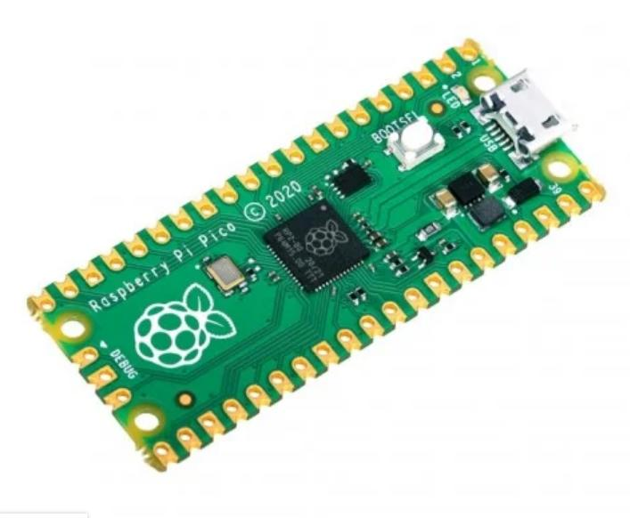

<!doctype html><html lang="ko"><meta charset="utf-8"><style>@font-face{font-family:Pretendard;src:url('/assets/Pretendard-Regular.ttf')}body{margin:0;font-family:Pretendard,sans-serif;color:#17345d}.canvas{box-sizing:border-box;width:1000px;height:605px;padding:35px 42px;background:#DFEAFF}h1{margin:0;color:#315DAB;font-size:44px}img{width:350px;height:230px;object-fit:contain;background:white;border-radius:18px}.row{display:flex;align-items:center;gap:22px;margin:30px 0}.device{text-align:center;font-size:25px;font-weight:bold}.computer{display:grid;place-items:center;width:245px;height:155px;border:5px solid #315DAB;border-radius:18px;background:white;font-size:29px;font-weight:bold}.arrow{text-align:center;font-size:25px;font-weight:bold;color:#315DAB}.arrow span{display:block;font-size:47px}p{font-size:28px;line-height:1.5;margin:10px 0}small{font-size:18px}</style><main class="canvas"><h1>USB로 Pico 연결</h1><div class="row"><div class="device"><div>Raspberry Pi Pico</div></div><div class="arrow">Micro-USB 데이터 케이블<span>⟷</span></div><div class="computer">컴퓨터 · Thonny</div></div><p>펌웨어 설치 때는 BOOTSEL을 누른 채 연결합니다.<br>실행할 때는 USB로 코드와 Shell 메시지가 오갑니다.</p><small>Pico 사진 · MicroPython 공식 배포 페이지</small></main></html>